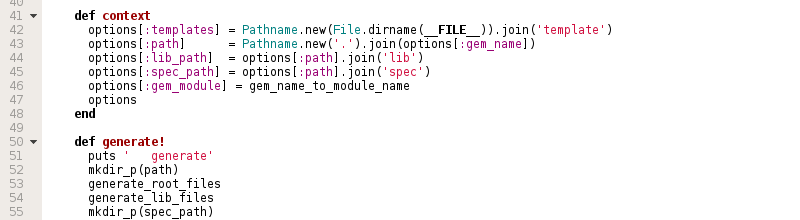
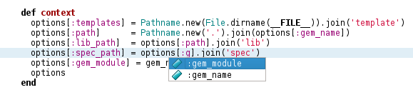
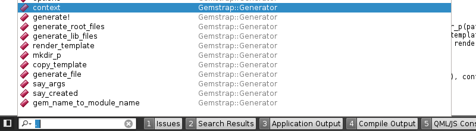
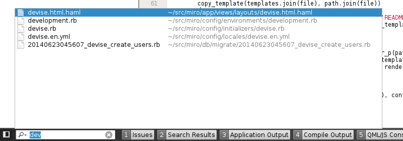
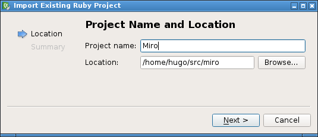
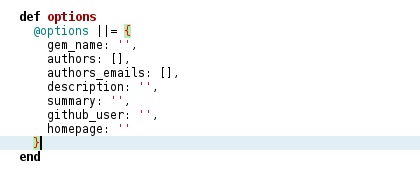

RubyCreator is an effort to add Ruby language support to QtCreator IDE and aim to have most of the features you can find on QtCreator C++ support.
Believe me, the plugin is much better then their logo!
Features
Far more than just syntax highlighting!

Code folding and a github like syntax highlight, nice and clean for your eyes.

Auto completion! RubyCreator know about your symbols, methods and identifiers.

Fast code navigation through project or current file methods via QtCreator CTRL+K menu.

Fast navigation through project files via QtCreator CTRL+K menu.

One-step import wizard, just say the directory where you ruby file is and it's done!

Parenthesis matching to help you to see where these damn things started!
Other features
Code navigation via F2, press F2 under a identifier and if there's a method with that name you will be there.
Code indentation.
Auto completion, type "if foo⏎" and get the "end" keyword placed for you and the cursor on the right place, works for every construct that needs an "end", not only "if".
Features inherited from QtCreator
Code navigation history, are you editing a file and pressed F2 to go to a function but now want to go back? Press ALT + Left/Right to go back/forward on code location you were.
Git (subversion, CVS, etc) integration, want to do a git blame? hold ALT and type GB, done.
Navigation on git blame/git log outputs, want to see some commit found on a git blame? just click on the hash.